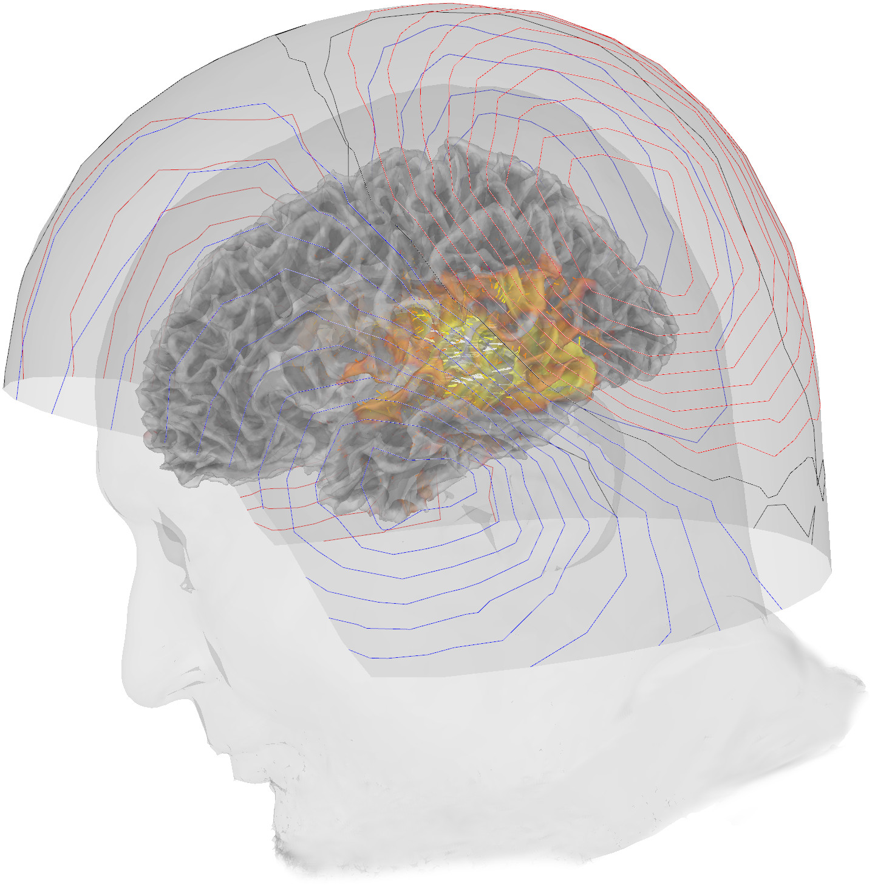

Back to the CMHC lab page
Back to the CMHC lab page
Volunteer to participate in our neuroimaging study
What exactly goes on in the brain when we recognize some markings on a piece of paper as words? Come participate in our study on visual word recognition, where we use state of the art brain imaging techniques to collect as many pieces of the puzzle as we can!
What you will be doing
The study is mostly performed inside an magnetoencephalography (MEG) scanner, which (passively) measures the magnetic field generated by the neurons in your brain (about 90 mins). During the MEG measurement, you will be presented with a series of visual stimuli ( that contain letters, letter-like symbols, meaningless patterns, etc.). To keep you engaged, you are continuously asked to answer questions about the stimuli by pressing a button.
We will also want a magnetic resonance image (MRI) of your head, which we will do in a separate session (about 30 mins).
To compensate you for your trouble, you will receive a gift card to the Aalto University shop of 30€!
Who qualifies for the study
Participants must be native Finnish speakers, over 18 years old, and don't have any language disorders, such as dyslexia. The participants are also expected to be right-handed.
Participants must not have, or have a history of, psychiatric or neurological disorders (e.g., epilepsy, claustrophobia), somatic disorders, or problems in language development. Also, please inform us if there are any metals on or in your body (e.g. braces, pacemakers, non-removable piercings, cochlear implants, prostheses) so we may verify they are safe in the MRI scanner.
When and where
This study will be carried out this summer (June-September) on the campus of Aalto University. If you are interested, please follow the link below to sign up, or contact one of the coordinating researchers below, and we will send you more information about the study and schedule a suitable time with you.
Thank for your possible participation in our research!
CLICK HERE TO SIGN UP
Coordinating researchers
Laura Rautiainen
Master student, Aalto University
laura.rautiainent@aalto.fi
Marijn van Vliet
Academy Research Fellow, Aalto University
marijn.vanvliet@aalto.fi